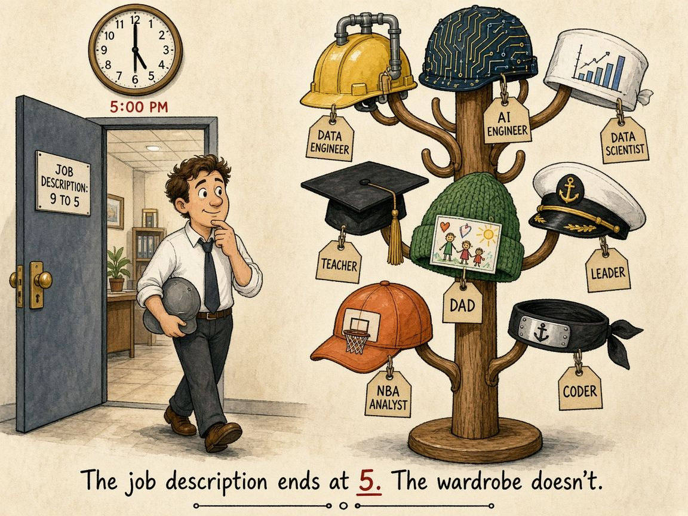

Who Really Writes Your Job Description?
Every role comes with a job description. It lists the skills, the responsibilities, and maybe a few “nice to haves”. It’s useful, because it tells you and your team what you’re there to do.
But I’ve started to think of it as only part of the story.
A baseline, not a boundary
A job description describes roughly eight hours of your day. It sets the baseline: what you’re expected to deliver and what you’ve been trusted with. That matters, and doing it well comes first.
What it doesn’t describe is everything else you choose to become. The rest of the day, the weekends, the curiosity you follow on your own time: nobody writes that part for you.

What that looks like for me
Outside my day role, I’ve spent a lot of hours on things no job ad ever asked for:
- NoFlightZone, my NBA analytics channel, where I build models on Spurs data, make lineup charts, and occasionally learn painful lessons (like leaking plus/minus into a model by accident).
- Code Ninja, a little project that answers “coding is dead” with “tiny programs, enormous results”, where ten lines of code grow a forest and then you learn to write them yourself.
- Hey Hugh, a learning app where I’m experimenting with ways to check whether a syllabus actually hangs together.
Before data, I was a finance analyst at San Miguel Purefoods reconciling eggs against planning reports. That job description never said “this will make you a better data engineer”, but it did.
Why it matters
When you treat your job description as the ceiling, you wait for permission to grow. When you treat it as the floor, you go looking for the next skill yourself. And when the next opportunity comes along, you’re often already qualified for it, because you’ve been doing that work quietly on your own.
It also works the other way. The skills you build outside the eight hours have a habit of sneaking back in: the side-project debugging, the visualisation trick, the testing habit. Your day job gets better because of the version of you it never asked for.
So who writes it?
Your company writes the first draft. You write everything after that.
And in this AI era, following your passion is easier than ever, because the gap between an idea and something real is so much smaller. There’s no need to wait for your company to decide what you can and can’t do.